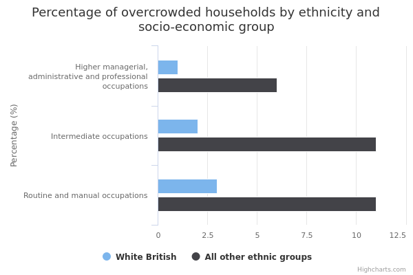
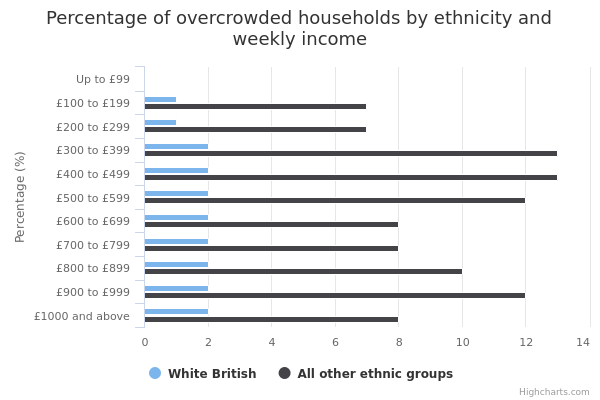
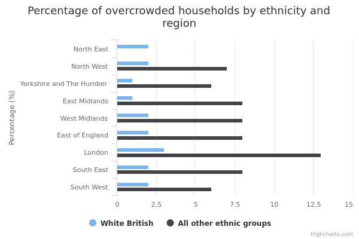
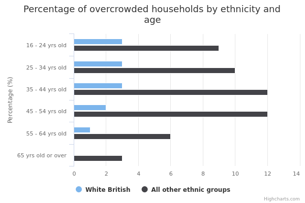
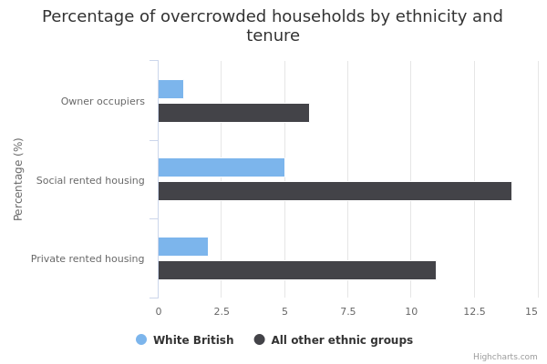

Overcrowded households
The main facts and figures show that:
-
around 678,000 (3%) of the 22.6 million households in England are overcrowded in 2015/16
-
most ethnic minority households were more likely to experience overcrowding than White British households
-
around 2% of White British households experienced overcrowding compared with 30% of Bangladeshi households
-
in every socio-economic group, age group and type of housing tenure, White British people were less likely than any other ethnic group to live in overcrowded households, as well as in most regions and income bands
Things you need to know
Compared with White British households, ethnic minority households tend to be larger. This may explain some of the differences in overcrowding.
So that there is a large enough number of ethnic minority households to produce reliable findings, the data is taken from the English Housing Survey (EHS), 2013/14, 2014/15 and 2015/16, combined.
Information about households available from the EHS Headline and Annual Reports is normally based on a single 12 month period (April to March) of the survey, so some of the statistics used here may not match those in the Headline and Annual Reports.
The commentary has focused on findings based on at least 30 households to ensure that we report reliable findings. For this reason, information is not provided about people from Gypsy or Irish Traveller, Mixed White and Asian, Mixed White and Black Caribbean or Any Other Mixed/Multiple ethnic groups.
The EHS is a ‘sample survey’: it collects information from a random sample of the population to make generalisations (reach 'findings’) about the total population.
For example, EHS findings might include the percentage of households that are overcrowded.
The commentary for this data only includes reliable, or ‘statistically significant’, findings.
Findings are statistically significant when we can be confident that they can are reflective of the total population rather than just the survey sample.
What the data measures
This data measures household overcrowding and how different ethnic groups are affected.
Overcrowding is measured using the bedroom standard. This is the difference between the number of bedrooms needed to avoid undesirable sharing (based on the age, sex and relationship of household members) and the number of bedrooms actually available to the household.
For example, each married or cohabiting couple would be allowed a bedroom, as would an individual aged 21 or over and each pair of adolescents or children of the same sex. The bedroom standard is described in detail in the English Housing Survey Headline Report 2015-16
A household is counted as overcrowded if it has fewer bedrooms than it needs according to the bedroom standard.
The figures come from the English Housing Survey (EHS) 2013/14, 2014/15 and 2015/16. The survey involves face-to-face interviews with about 13,300 randomly selected households every year. These are used to make estimates for the 22 million households in England as a whole.
The EHS is a national survey of people's housing circumstances and the condition and energy efficiency of homes in England.
The information relates to households. A household is one person or a group of people (not necessarily related) who have the accommodation as their only or main residence. If it is a group, they must share cooking facilities and also share a living room, sitting room or dining area.
The EHS has ethnicity information on the household reference person as well as all other members of the household. The ‘household reference person’ is the person in whose name the accommodation is owned or rented, or who is otherwise responsible for it.
Some households have people from different ethnic backgrounds; where this happens, we have used the ethnic background of the household reference person.
Nearly every household reference person – more than 99.8% interviewed – provided information on their ethnicity.
At the geographical level, the data is shown for the nine regions of England: North East, North West, Yorkshire & Humberside, East Midlands, West Midlands, East, London, South East and the South West.
Why these ethnic categories were chosen
For comparisons made at national level (England), this data uses the standardised ethnic groups based on the 2011 census.
White:
-
English/Welsh/Scottish/Northern Irish/British
-
Irish
-
Gypsy, Traveller or Irish Traveller
-
Any other White background
Mixed/Multiple ethnic groups:
-
White and Black Caribbean
-
White and Black African
-
White and Asian
-
Any other Mixed/Multiple ethnic background
Asian/Asian British:
-
Indian
-
Pakistani
-
Bangladeshi
-
Chinese
-
Any other Asian background
Black/African/Caribbean/Black British:
-
African
-
Caribbean
-
Any other Black/African/Caribbean background
Other ethnic group:
-
Arab
-
Any other ethnic group
For data analysed both by ethnicity and by socio-economic group, income, region, age and tenure, the following binary category has been used:
- White British and Other – White British people compared with all other groups (including White ethnic minorities and all other ethnic minorities)
This is because the number of people surveyed to generate estimates for the population as a whole becomes too small to be reliable when also broken down by ethnicity and by another factor like socio-economic group or income.
Data is therefore grouped to a size where estimates become reliable. In this case, information which is broken down by ethnicity and another factor compares White British with Other.
Overcrowded households by ethnicity

Percentage and number of overcrowded households by ethnicity
| Asian | |||
|---|---|---|---|
| Bangladeshi | 30 | 32,465 | 108,241 |
| Chinese | 7 | 9,770 | 132,162 |
| Indian | 8 | 36,836 | 486,845 |
| Pakistani | 15 | 50,107 | 327,347 |
| Asian other | 10 | 22,247 | 213,555 |
| Black | |||
| Black African | 15 | 53,154 | 360,219 |
| Black Caribbean | 8 | 22,339 | 285,256 |
| Black other | 16 | 5,363 | 33,438 |
| Mixed | |||
| Mixed White/Asian | 3 | 1,904 | 64,126 |
| Mixed White/Black African | 7 | 5,239 | 75,210 |
| Mixed White/Black Caribbean | 4 | 4,374 | 98,107 |
| Mixed other | 5 | 2,171 | 43,212 |
| White | |||
| White British | 2 | 315,474 | 18,827,771 |
| White Irish | 5 | 9,689 | 202,418 |
| White Gypsy/Roma | withheld because a small sample size makes it unreliable | withheld because a small sample size makes it unreliable | withheld because a small sample size makes it unreliable |
| White other | 7 | 78,902 | 1,052,401 |
| Other | |||
| Arab | 11 | 7,007 | 64,164 |
| Any other | 8 | 19,653 | 233,069 |
Summary
This data shows that:
-
678,000 (3%) of the 22.6 million households in England were overcrowded in 2015/16
-
Bangladeshi households has the highest rates of overcrowding at 30% (around 32,000 households)
-
2% of White British households experienced overcrowding, which is around 315,000 households
-
although the survey estimates show differences in the rates of overcrowding for Mixed White and Black Caribbean, Mixed White and Asian and Other Mixed households compared with White British households in this sample, these are not reliable enough to draw any conclusions about the differences between these groups in the total population
Download image and data
Overcrowded households by ethnicity and socio-economic group

Percentage and number of overcrowded households by ethnicity socio-economic group
| White British | All other ethnic groups | |||||
| Higher managerial, administrative and professional occupations | 1 | 59,423 | 7,583,359 | 6 | 87,153 | 1,376,604 |
|---|---|---|---|---|---|---|
| Intermediate occupations | 2 | 65,141 | 3,908,430 | 11 | 80,223 | 734,328 |
| Routine and manual occupations | 3 | 162,790 | 6,274,838 | 11 | 146,653 | 1,283,093 |
Summary
This data shows that:
- in every socio-economic group, ethnic minority households were more likely to experience overcrowding than White British households
Download image and data
Overcrowded households by ethnicity and income

Percentage and number of overcrowded households by ethnicity and weekly income
| White British | All other ethnic groups | |||||
| Up to £99 | 0 | 0 | 219,652 | 1 | 856 | 63,678 |
|---|---|---|---|---|---|---|
| £100 to £199 | 1 | 12,947 | 1,658,642 | 7 | 22,847 | 333,662 |
| £200 to £299 | 1 | 27,102 | 2,330,425 | 7 | 29,454 | 401,075 |
| £300 to £399 | 2 | 35,323 | 2,167,669 | 13 | 63,438 | 474,903 |
| £400 to £499 | 2 | 37,957 | 1,769,992 | 13 | 56,462 | 426,782 |
| £500 to £599 | 2 | 33,553 | 1,640,197 | 12 | 40,148 | 332,926 |
| £600 to £699 | 2 | 35,478 | 1,540,292 | 8 | 22,416 | 296,515 |
| £700 to £799 | 2 | 29,271 | 1,283,624 | 8 | 20,453 | 261,015 |
| £800 to £899 | 2 | 20,393 | 1,076,614 | 9 | 19,869 | 210,022 |
| £900 to £999 | 2 | 13,762 | 854,316 | 12 | 19,808 | 170,613 |
| £1000 and above | 2 | 69,688 | 4,284,737 | 8 | 65,635 | 814,503 |
Summary
This data shows that:
-
in almost every income band, ethnic minority households were more likely to experience overcrowding than White British households
-
although the survey estimates show differences in the rates of overcrowding for those earning less than £99 a week in this sample, these are not reliable enough to draw any conclusions about the differences between White British and ethnic minority households in the total population
Download image and data
Overcrowded households by ethnicity and area

Percentage and number of overcrowded households by ethnicity and region
| White British | All other ethnic groups | |||||
| North East | 2 | 17,632 | 1,083,531 | 7 | 3,812 | 57,729 |
|---|---|---|---|---|---|---|
| North West | 2 | 41,480 | 2,732,893 | 7 | 21,601 | 321,434 |
| Yorkshire and The Humber | 1 | 25,600 | 2,014,231 | 6 | 14,757 | 230,373 |
| East Midlands | 1 | 22,872 | 1,710,066 | 8 | 17,257 | 227,931 |
| West Midlands | 2 | 38,131 | 1,982,713 | 8 | 27,857 | 339,739 |
| East of England | 2 | 33,222 | 2,169,371 | 8 | 24,426 | 321,024 |
| London | 3 | 47,541 | 1,723,591 | 13 | 205,215 | 1,643,031 |
| South East | 2 | 52,399 | 3,193,654 | 8 | 36,299 | 486,885 |
| South West | 2 | 36,598 | 2,217,722 | 6 | 10,161 | 157,547 |
Summary
This data shows that:
-
in almost every region of England, ethnic minority households were more likely to experience overcrowding than White British households
-
although the survey estimates show differences in the rates of overcrowding in the North East between ethnic minorities and White British households in this sample, these are not reliable enough to draw any conclusions about differences between these groups in the total population
Download image and data
Overcrowded households by ethnicity and age

Percentage and number of overcrowded households by ethnicity and age
| White British | All other ethnic groups | |||||
| 16 - 24 yrs old | 3 | 17,244 | 573,254 | 9 | 17,354 | 202,590 |
|---|---|---|---|---|---|---|
| 25 - 34 yrs old | 3 | 74,103 | 2,396,932 | 10 | 87,225 | 901,571 |
| 35 - 44 yrs old | 3 | 90,418 | 2,941,139 | 12 | 125,466 | 1,044,794 |
| 45 - 54 yrs old | 2 | 90,827 | 3,766,221 | 12 | 91,065 | 761,583 |
| 55 - 64 yrs old | 1 | 29,835 | 3,249,826 | 6 | 24,590 | 413,099 |
| 65 yrs old or over | 0 | 13,047 | 5,900,399 | 3 | 15,684 | 462,057 |
Summary
This data shows that:
- in all age groups, ethnic minority households were more likely to experience overcrowding than White British households
Download image and data
Overcrowded households by ethnicity and housing tenure

Percentage and number of households by ethnicity and housing tenure
| White British | All other ethnic groups | |||||
| Owner occupiers | 1 | 102,116 | 12,733,724 | 6 | 88,075 | 1,574,662 |
|---|---|---|---|---|---|---|
| Social rented housing | 5 | 143,673 | 3,109,053 | 14 | 114,066 | 804,976 |
| Private rented housing | 2 | 69,685 | 2,984,994 | 11 | 159,244 | 1,406,057 |
Summary
This data shows that:
- ethnic minority households were more likely to experience overcrowding than White British households, regardless of whether they owned or rented their home
Download image and data
Methodology and type of data
Type of data
Survey
Purpose of data source
The English Housing Survey is a continuous national survey commissioned by the Department for Communities and Local Government (DCLG). It collects information about people’s housing circumstances and the condition and energy efficiency of housing in England.
It has 2 components:
-
a household interview
-
a physical inspection of the dwelling of a sample of the interviewed households.
Methodology
Face-to-face interview with a random sample of about 13,300 households a year.
The dwellings of about 6,000 of the interviewed households are randomly selected to take part in the physical survey element carried out by a qualified surveyor. In addition, a random sample of around 200 of the dwellings identified by the interviewer as vacant are also included in the physical survey element.
Weights are applied to the sample to produce estimates for the 22.6 million households in England as a whole.
Rounding
Estimates in the charts and tables are given to the nearest whole number but more detailed estimates to 1 decimal place are available in the downloads.
Quality and methodology informationData source details
Source
Department
Department for Communities and Local Government
Type of statistic
National statistic
Publication frequency
Annually
Suppression rules
Estimates based on less than 30 households have been suppressed to ensure that we report reliable findings.
The analysis has been done by binary classification only where broken down by National Statistics Socio-economic Classification (NS-SEC), income, region, age or tenure. This prevents small numbers appearing in the table and avoids the potential for identification of individuals.
Disclosure control
The data are deposited in the UK Data Archive, after a wide range of disclosure control has been applied.
Strictly disclosure controlled data in the form of derived variables are available under the End-User Licence (e.g. ethnicity is given as white/ethnic minority).
Data sets with some more details are made available under Special Licence after the users has applied to the EHS Team for access.
Potentially disclosive data, including low-level geography variables (postcode and LSOA) are available only through the UKDA Secure Access which requires users to undergo special training, including on disclosure control, before access is given.
Download the data
overcrowded-households.csv
This file contains the following: ethnicity, year, geography, age group, NS-SEC (socio-economic group), income, region, housing tenure, value, denominator, numerator and sample size